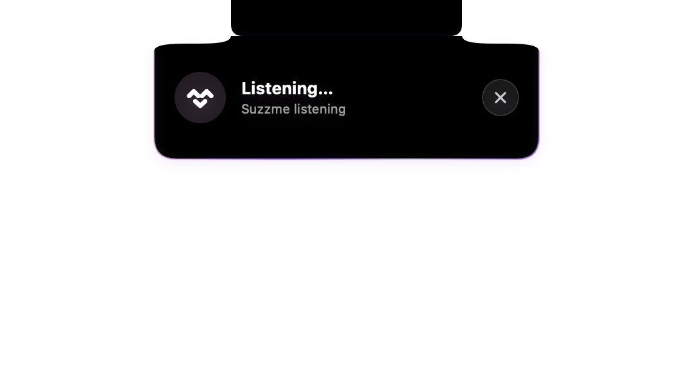

WAITLIST OPEN✳YOUR DAY, UNDERSTOOD✳MEMORY THAT MATTERS✳ALWAYS YOUR CALL✳LOCAL-FIRST BY DESIGN
A companion. Not another thing to manage.
Make room for what matters.
One familiar face. A little help throughout your day.
‹ › ↻⌑ suzzme / interactive preview
SUZZME ON MAC
A little closer. A lot more helpful.
Suzzme File EditWi-Fi 9:41

A familiar face. Right where you need it.Actual SwiftUI component · rendered preview
Listening… A compact surface below the physical notch.
✓
A little less to keep in your head.A little more space for you.
Home◧
Good morning, Alex.
Here’s what matters today.
Anything on your mind?
A little room to think, together.
Type to Suzzme↑
9:41▮▮▮ ▰
Good morning, Alex.Here’s what matters today.
Anything on your mind?
A little room to think, together.
Talk to Suzzme ≋
Type to Suzzme
YOUR DAILY SUMMARYRoom for what matters.
Your first meeting is at 10. There’s time to take it slow.
Open Daily Summary ↗
⌂Home◌Memory▤Sources
Familiar by design. Personal by nature.Illustrative app previews
An illustrative walkthrough. Choose a tab or press play to explore.
✓ Permission comes first◌ Memory you control⌘ Native to your devices
01 / YOUR DAY
Know what needs you.
Calendar and reminders become a calmer Daily Summary, with source limits made clear.
Small things. A real difference.
Life has a lot going on. Let’s make space.
For your plans. Your people. And the things worth remembering.
Your day, understood
Start with what matters.
A Daily Summary turns your permitted calendar and reminders into a calmer view of the day ahead.
Calendar and reminders, brought together
A clear view of what’s coming up
Only the sources you allow
Your Daily SummaryGood morning, Alex.☼
You have a little breathing room this morning.
10:00
Design catch-upCalendar · 30 minutes
15:00
Pick up the parcelReminders · Today
Memory with meaning
Keep the meaningful bits.
Useful preferences, people, and projects. Personal memory you can inspect, correct, or delete.
Keep useful personal context
Review and correct what Suzzme remembers
Remove a memory whenever you choose
◌ People who matter
☕ Your morning rituals
▱ Ideas worth keeping
✓ Always yours to edit
A conversation, naturally
However you like to ask.
Speak naturally or type a thought. One companion, with the context of your current conversation.
Ask by voice or text
Follow up in the same conversation
Built around your permitted context
What’s coming up today?
Your design catch-up is at 10. You also have a reminder to pick up the parcel this afternoon.
An example conversation
A helping hand
A helping hand. You decide.
Create or update supported calendar events and reminders with a clear confirmation before anything changes.
Review the proposed change
Confirm before anything happens
See whether the action succeeded
✓
One less thing to remember.
Remind me to water the plants.
Tomorrow9:00 AM
Review → Confirm → Done
9:41▮▮▮ ▰
Good morning, Alex.Here’s what matters today.
Anything on your mind?
A little room to think, together.
Talk to Suzzme ≋
Type to Suzzme
YOUR DAILY SUMMARYRoom for what matters.
Your first meeting is at 10. There’s time to take it slow.
Open Daily Summary ↗
⌂Home◌Memory▤Sources
Illustrative iPhone app preview
SUZZME ON IPHONE
Your companion. Along for the day.
Start your morning with a Daily Summary, ask a question on the go, or keep a useful detail for later. Suzzme brings the same familiar face to a native iPhone experience.
Speak naturally or type a thought
Review your memories and choose your sources
Confirm calendar and reminder changes before they happen
Designed for iPhonePermission-controlled sourcesLocal-first
Currently in development. Voice and advanced intelligence depend on device, OS, and language support. Cross-device sync is not available in the current build.
Rendered directly from Suzzme’s SwiftUI component
A familiar face. A little closer.
Here when you need a moment.
Suzzme expands directly below your MacBook’s notch to listen, show a response, or ask for confirmation. Macs without a notch use a top-center surface. Choose a state in the demo to see the actual app component.
Being helpful shouldn’t mean knowing everything. Suzzme starts with permission, and keeps you in control.
01
Local-first, from the start.
Private context is processed on your device, without a cloud LLM. Apple’s on-device models are used where available.
02
Only the sources you choose.
Calendar, Reminders, and Contacts are permission-controlled. Public webpages are read only when you explicitly add them to Watched Links.
03
Memory you can see and shape.
Review, correct, and delete personal memory. Suzzme keeps useful context, not a hidden archive of everything you do.
Your invitation to a lighter day.
Meet Suzzme early.
Join the waitlist for early-access updates as Suzzme takes shape.
A little closer to what’s next.
01 Development updatesSee what’s taking shape.02 Early-access newsHear when access opens.03 Built for your devicesiPhone, iPad and Mac.
Your email is used for Suzzme early-access updates.
Good questions.
A little more clarity.
What is Suzzme?+
Suzzme is a native, local-first personal AI assistant for iPhone, iPad, and Mac. It brings together permitted daily context, personal memory, conversation, and confirmed actions to help you understand what matters.
Can I download it yet?+
Suzzme is currently in development. The waitlist is open for early-access updates; a public download and release date have not been announced. This website uses illustrative previews.
Does Suzzme work offline?+
Local features are designed to work on your device. Advanced intelligence depends on device and OS support, while simpler local functionality remains available. Watched public webpages need an internet connection. Voice also depends on supported devices and languages.
Will my iPhone and Mac sync?+
Cross-device sync is not available in the current build. Suzzme stores its data locally on each device.
Does it act without asking?+
No. Calendar and reminder changes need a specific confirmation, and Suzzme checks that the change succeeded before reporting completion. Access to your sources is optional and permission-controlled.
A little closer to launch.
A lighter day starts with a hello.
The waitlist is open. Be among the first to meet Suzzme.